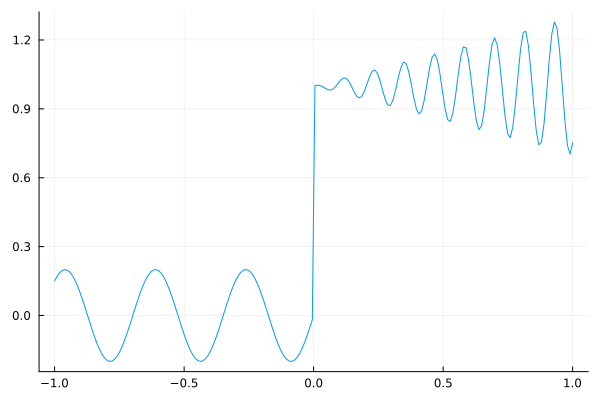
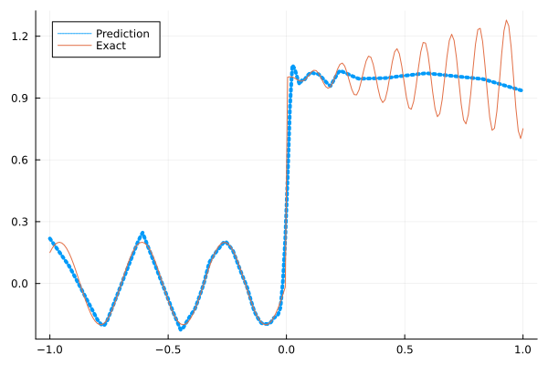
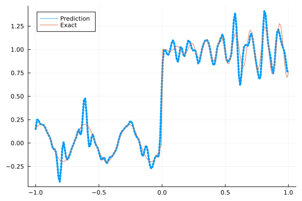
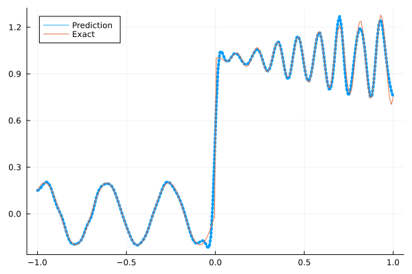
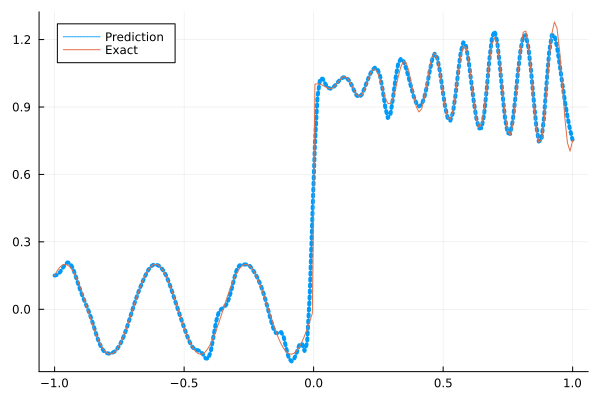
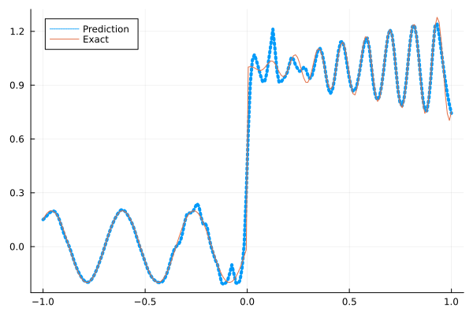

Fitting a nonlinear discontinuous function
This example is taken from here. However, we do not use adaptive activation functions. Instead, we show that using suitable non-parametric activation functions immediately performs better.
Consider the following discontinuous function with discontinuity at $x=0$:
\[u(x)= \begin{cases}0.2 \sin (18 x) & \text { if } x \leq 0 \\ 1+0.3 x \cos (54 x) & \text { otherwise }\end{cases}\]
The domain is $[-1,1]$. The number of training points used is 50.
Import pacakges
using Lux, Sophon
using NNlib, Optimisers, Plots, Random, StatsBase, ZygoteDataset
function u(x)
if x <= 0
return 0.2 * sin(18 * x)
else
return 1 + 0.3 * x * cos(54 * x)
end
end
function generate_data(n=50)
x = reshape(collect(range(-1.0f0, 1.0f0, n)), (1, n))
y = u.(x)
return (x, y)
endgenerate_data (generic function with 2 methods)Let's visualize the data.
x_train, y_train = generate_data(50)
x_test, y_test = generate_data(200)
Plots.plot(vec(x_test), vec(y_test),label=false)
Naive Neural Nets
First we demonstrate show naive fully connected neural nets could be really bad at fitting this function.
model = FullyConnected((1,50,50,50,50,1), relu)Chain(
layer_1 = Dense(1 => 50, relu), # 100 parameters
layer_2 = Dense(50 => 50, relu), # 2_550 parameters
layer_3 = Dense(50 => 50, relu), # 2_550 parameters
layer_4 = Dense(50 => 50, relu), # 2_550 parameters
layer_5 = Dense(50 => 1), # 51 parameters
) # Total: 7_801 parameters,
# plus 0 states, summarysize 80 bytes.Train the model
function train(model, x, y)
ps, st = Lux.setup(Random.default_rng(), model)
opt = Adam()
st_opt = Optimisers.setup(opt,ps)
function loss(model, ps, st, x, y)
y_pred, _ = model(x, ps, st)
mes = mean(abs2, y_pred .- y)
return mes
end
for i in 1:2000
gs = gradient(p->loss(model,p,st,x,y), ps)[1]
st_opt, ps = Optimisers.update(st_opt, ps, gs)
if i % 100 == 1 || i == 2000
println("Epoch $i || ", loss(model,ps,st,x,y))
end
end
return ps, st
endtrain (generic function with 1 method)Plot the result
@time ps, st = train(model, x_train, y_train)
y_pred = model(x_test,ps,st)[1]
Plots.plot(vec(x_test), vec(y_pred),label="Prediction",line = (:dot, 4))
Plots.plot!(vec(x_test), vec(y_test),label="Exact",legend=:topleft)Epoch 1 || 1.1885279379652007
Epoch 101 || 0.02234090620235838
Epoch 201 || 0.015981349975397675
Epoch 301 || 0.01561698168232898
Epoch 401 || 0.015254868292858478
Epoch 501 || 0.014466260506933604
Epoch 601 || 0.013494631030281888
Epoch 701 || 0.012944702153346145
Epoch 801 || 0.012661606954827107
Epoch 901 || 0.012410229913402047
Epoch 1001 || 0.012193701982065082
Epoch 1101 || 0.011952019945895873
Epoch 1201 || 0.011171521821886934
Epoch 1301 || 0.009103807567220209
Epoch 1401 || 0.007956634005522515
Epoch 1501 || 0.007739889869905727
Epoch 1601 || 0.007608015125532437
Epoch 1701 || 0.007618582358767547
Epoch 1801 || 0.007551047691649977
Epoch 1901 || 0.007559951718235075
Epoch 2000 || 0.007511121489645056
14.470634 seconds (15.49 M allocations: 1.477 GiB, 2.77% gc time, 93.66% compilation time)
Siren
We use four hidden layers with 50 neurons in each.
model = Siren(1,50,50,50,50,1; omega = 30f0)Chain(
layer_1 = Dense(1 => 50, sin), # 100 parameters
layer_2 = Dense(50 => 50, sin), # 2_550 parameters
layer_3 = Dense(50 => 50, sin), # 2_550 parameters
layer_4 = Dense(50 => 50, sin), # 2_550 parameters
layer_5 = Dense(50 => 1), # 51 parameters
) # Total: 7_801 parameters,
# plus 0 states, summarysize 88 bytes.@time ps, st = train(model, x_train, y_train)
y_pred = model(x_test,ps,st)[1]
Plots.plot(vec(x_test), vec(y_pred),label="Prediction",line = (:dot, 4))
Plots.plot!(vec(x_test), vec(y_test),label="Exact",legend=:topleft)Epoch 1 || 1.4476074862621946
Epoch 101 || 0.001511826143631197
Epoch 201 || 0.00014845363838356966
Epoch 301 || 9.769070942094088e-6
Epoch 401 || 3.6211348468389863e-7
Epoch 501 || 7.443402129510561e-9
Epoch 601 || 8.704830905344088e-11
Epoch 701 || 1.5097794151550229e-12
Epoch 801 || 1.3028754103414e-13
Epoch 901 || 5.067285302005766e-14
Epoch 1001 || 9.185729338185084e-14
Epoch 1101 || 4.298691211249328e-14
Epoch 1201 || 5.39915668258778e-14
Epoch 1301 || 6.005635339126468e-14
Epoch 1401 || 6.012971277969951e-14
Epoch 1501 || 6.108250782621986e-14
Epoch 1601 || 6.398289166635714e-14
Epoch 1701 || 6.481744420738205e-14
Epoch 1801 || 4.667337221720841e-14
Epoch 1901 || 4.771643241212237e-14
Epoch 2000 || 1.5101609544036182e-13
5.656580 seconds (5.83 M allocations: 1.097 GiB, 4.35% gc time, 81.34% compilation time)
As we can see the model overfits the data, and the high frequencies cannot be optimized away. We need to tunning the hyperparameter omega
model = Siren(1,50,50,50,50,1; omega = 10f0)Chain(
layer_1 = Dense(1 => 50, sin), # 100 parameters
layer_2 = Dense(50 => 50, sin), # 2_550 parameters
layer_3 = Dense(50 => 50, sin), # 2_550 parameters
layer_4 = Dense(50 => 50, sin), # 2_550 parameters
layer_5 = Dense(50 => 1), # 51 parameters
) # Total: 7_801 parameters,
# plus 0 states, summarysize 88 bytes.@time ps, st = train(model, x_train, y_train)
y_pred = model(x_test,ps,st)[1]
Plots.plot(vec(x_test), vec(y_pred),label="Prediction",line = (:dot, 4))
Plots.plot!(vec(x_test), vec(y_test),label="Exact",legend=:topleft)Epoch 1 || 0.8546895104747333
Epoch 101 || 0.00749094955905777
Epoch 201 || 0.0053501925586212215
Epoch 301 || 0.004013421440322605
Epoch 401 || 0.0031319125259820623
Epoch 501 || 0.0023192440726084824
Epoch 601 || 0.0013986776856058287
Epoch 701 || 0.0007155519386069805
Epoch 801 || 0.00035471843717535507
Epoch 901 || 0.0001802539608500818
Epoch 1001 || 0.00010508605363489102
Epoch 1101 || 6.786884903759087e-5
Epoch 1201 || 4.710375405009234e-5
Epoch 1301 || 3.5167930341155226e-5
Epoch 1401 || 2.8161671918264138e-5
Epoch 1501 || 2.3897711304237657e-5
Epoch 1601 || 2.1152623683984168e-5
Epoch 1701 || 1.9241303523868126e-5
Epoch 1801 || 1.7785289440572065e-5
Epoch 1901 || 1.6580430969310685e-5
Epoch 2000 || 1.553129205386487e-5
0.935435 seconds (855.10 k allocations: 786.339 MiB, 7.16% gc time)
Gaussian activation function
We can also try using a fully connected net with the gaussian activation function.
model = FullyConnected((1,50,50,50,50,1), gaussian)Chain(
layer_1 = Dense(1 => 50, gaussian), # 100 parameters
layer_2 = Dense(50 => 50, gaussian), # 2_550 parameters
layer_3 = Dense(50 => 50, gaussian), # 2_550 parameters
layer_4 = Dense(50 => 50, gaussian), # 2_550 parameters
layer_5 = Dense(50 => 1), # 51 parameters
) # Total: 7_801 parameters,
# plus 0 states, summarysize 80 bytes.@time ps, st = train(model, x_train, y_train)
y_pred = model(x_test,ps,st)[1]
Plots.plot(vec(x_test), vec(y_pred),label="Prediction",line = (:dot, 4))
Plots.plot!(vec(x_test), vec(y_test),label="Exact",legend=:topleft)Epoch 1 || 0.4682991536472903
Epoch 101 || 0.00544800570094109
Epoch 201 || 0.0034829177313676755
Epoch 301 || 0.0011091164344197604
Epoch 401 || 0.00022307016715902378
Epoch 501 || 2.1911332396752142e-5
Epoch 601 || 2.2104828752345045e-6
Epoch 701 || 1.7220345953930794e-7
Epoch 801 || 0.00037303432576991187
Epoch 901 || 1.2681884101416926e-8
Epoch 1001 || 6.079947649413302e-11
Epoch 1101 || 0.00018786471014039984
Epoch 1201 || 4.207832707559589e-9
Epoch 1301 || 9.735444303975527e-13
Epoch 1401 || 4.321310735283673e-13
Epoch 1501 || 5.1224490673663846e-5
Epoch 1601 || 8.429391509451741e-9
Epoch 1701 || 2.1104075063802182e-11
Epoch 1801 || 5.916615457868143e-13
Epoch 1901 || 7.646169041906604e-14
Epoch 2000 || 4.743962620839983e-14
5.698069 seconds (6.65 M allocations: 1.138 GiB, 3.50% gc time, 82.30% compilation time)
Quadratic activation function
quadratic is much cheaper to compute compared to the Gaussain activation function.
model = FullyConnected((1,50,50,50,50,1), quadratic)Chain(
layer_1 = Dense(1 => 50, quadratic), # 100 parameters
layer_2 = Dense(50 => 50, quadratic), # 2_550 parameters
layer_3 = Dense(50 => 50, quadratic), # 2_550 parameters
layer_4 = Dense(50 => 50, quadratic), # 2_550 parameters
layer_5 = Dense(50 => 1), # 51 parameters
) # Total: 7_801 parameters,
# plus 0 states, summarysize 80 bytes.@time ps, st = train(model, x_train, y_train)
y_pred = model(x_test,ps,st)[1]
Plots.plot(vec(x_test), vec(y_pred),label="Prediction",line = (:dot, 4))
Plots.plot!(vec(x_test), vec(y_test),label="Exact",legend=:topleft)Epoch 1 || 0.28695061219785506
Epoch 101 || 0.005351364982841209
Epoch 201 || 0.004030013348823063
Epoch 301 || 0.0018402161505343317
Epoch 401 || 0.0004070806392002093
Epoch 501 || 4.501274630879769e-5
Epoch 601 || 4.687837369180852e-6
Epoch 701 || 8.908567205801784e-7
Epoch 801 || 4.252112597805887e-5
Epoch 901 || 1.5508299975643122e-7
Epoch 1001 || 2.922554349404991e-8
Epoch 1101 || 8.037424587871373e-6
Epoch 1201 || 3.090142392232081e-6
Epoch 1301 || 9.732097063442906e-5
Epoch 1401 || 7.140729108361594e-8
Epoch 1501 || 6.335503203781e-6
Epoch 1601 || 3.5101832170403704e-8
Epoch 1701 || 8.641694008001396e-6
Epoch 1801 || 2.60865407219267e-5
Epoch 1901 || 1.8102178684438775e-8
Epoch 2000 || 2.2227973977656796e-5
4.948815 seconds (5.76 M allocations: 1.092 GiB, 4.00% gc time, 85.22% compilation time)
Conclusion
"Neural networks suppresse high frequency components" is a misinterpretation of the spectral bias. The accurate way of putting it is that the lower frequencies in the error are optimized first in the optimization process. This can be seen in Siren's example of overfitting data, where you do not have implicit regularization. The high frequency in the network will never go away because it has fitted the data perfectly.
Mainstream attributes the phenomenon that neural networks "suppress" high frequencies to gradient descent. This is not the whole picture. Initialization also plays an important role. Siren mitigats this problem by initializing larger weights in the first layer, while activation functions such as gassian have large enough gradients and sufficiently large support of the second derivative with proper hyperparameters. Please refer to Vincent Sitzmann, Julien Martel, Alexander Bergman, David Lindell, Gordon Wetzstein (2020), Sameera Ramasinghe, Simon Lucey (2021) and Sameera Ramasinghe, Lachlan MacDonald, Simon Lucey (2022) if you want to dive deeper into this.